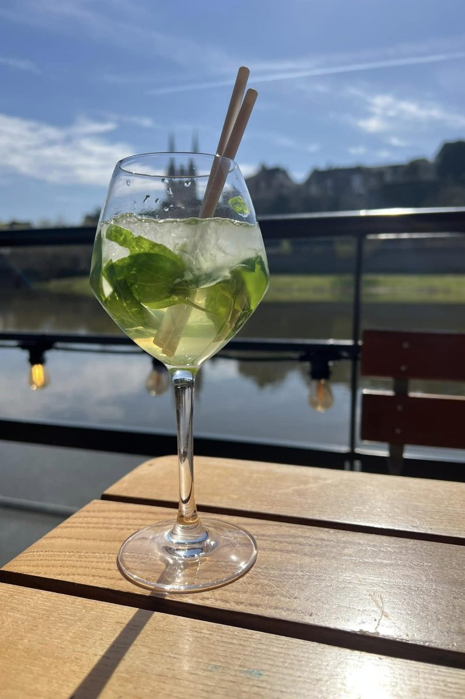
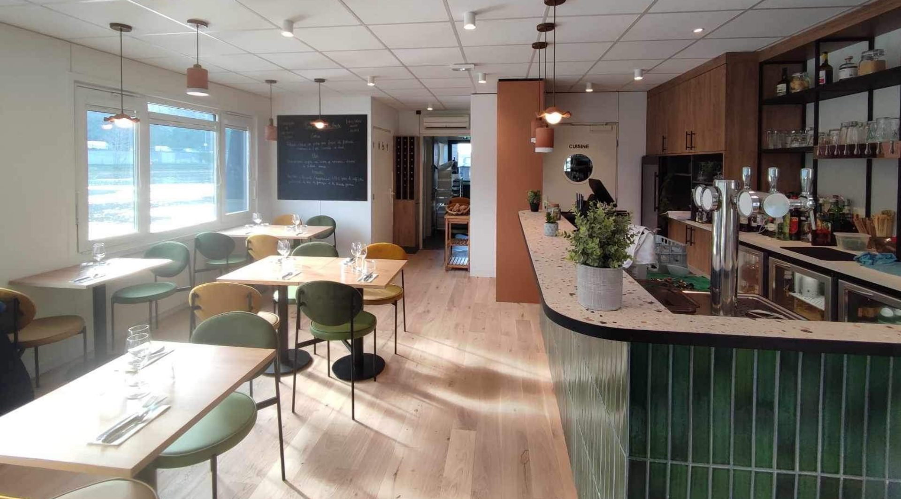
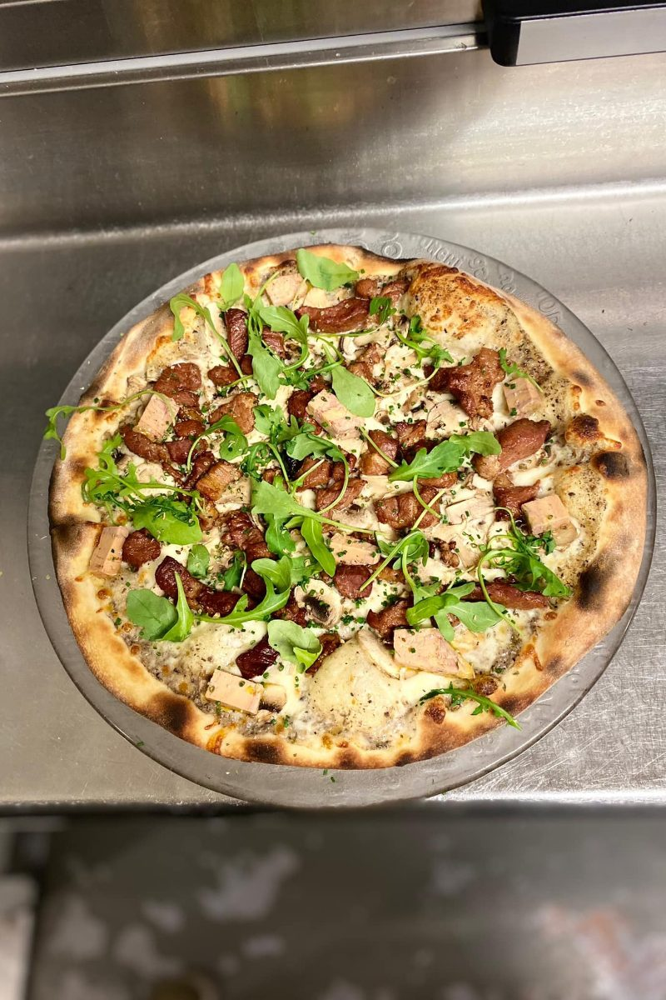
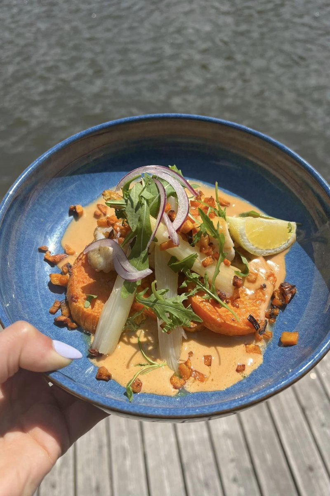
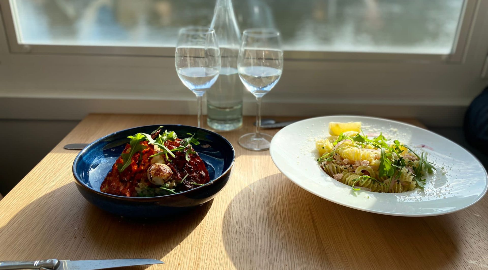
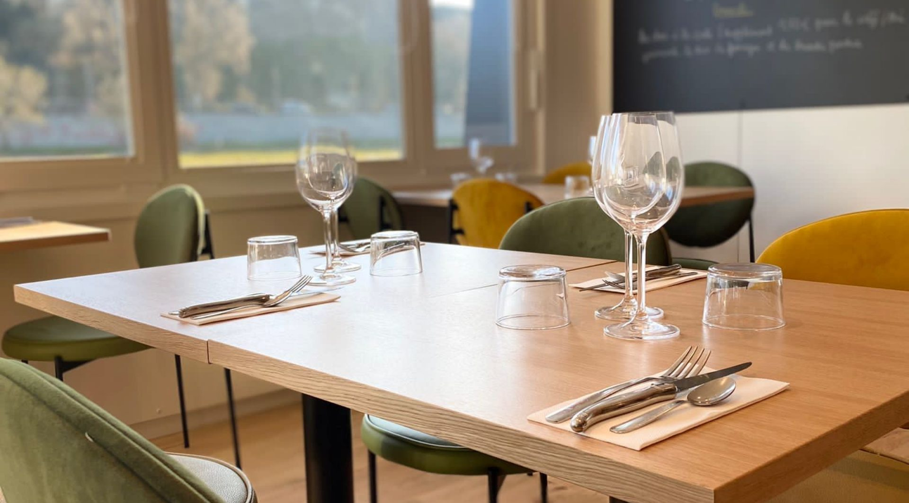

Péniche restaurant & pizzeria · Angers
L'eau à la bouche est un restaurant-pizzeria installé à bord d'un bateau, à deux pas du théâtre du Quai, des nouvelles halles et du centre-ville. Un cadre atypique donnant sur le château, repris en 2020 par l'ancien chef cuisinier.
Mardi au samedi, midi et soir Ouvert 7j/7 en juin, juillet et août Accès PMR · tramway · stationnement

Ce bateau emblématique a vu le jour il y a une décennie, pour le plus grand bonheur des amoureux de la Loire. D'abord amarré à Ancenis, il a rapidement trouvé son ancrage à Angers, devenant un repère pour les habitants et les visiteurs de la région.
Après deux propriétaires passionnés qui ont su faire évoluer ce projet, c'est aujourd'hui notre tour de prendre les rênes de ce navire. Seul, à deux, en famille ou entre amis : bienvenue à bord.

Chaque matin, nos chefs se déplacent chez notre boucher artisanal local et sélectionnent les viandes les plus délicates. Notre pizzaiolo pétrit sa pâte le matin même. Et chaque jour, un plat et un dessert sont élaborés selon les arrivages de nos fournisseurs.
Extrait de la carte servie à bord. Les plats signalés d'un point ocre changent selon le marché et sont annoncés à l'ardoise.
À partager… ou pas.
Bon à savoirToutes les tartines chaudes et les demi-croques sont servis avec de la salade verte.
Viande Bovine Française — Boucherie des Quais, Angers. Servies avec frites maison et salade verte.
Pâtes artisanales — Anjou Pâtes Fraîches, Angers.
Les glacesCafé, caramel, cassis, citron vert, chocolat, fraises, rhum-raisin, vanille — 1 boule 2,80 € · 2 boules 4,90 € · 3 boules 6,60 € · chantilly 1,60 €

« Notre pizzaiolo met en œuvre son savoir-faire pour préparer chaque matin une pâte fraîche, en utilisant exclusivement des ingrédients de première qualité provenant d'artisans locaux. »
SupplémentsBurrata 4,90 € · viandes et fromages 2,50 € · légumes et œuf 1,70 € · toutes nos pizzas peuvent être réalisées en base crème + 0,70 €
Pains artisanaux — Maison du Pain Soulard, Angers. Servis avec frites maison.


Profitez de nos pizzas depuis le confort de votre foyer. Le service à emporter est valable exclusivement pour les pizzas, pendant nos horaires d'ouverture.
Tickets repas, paiement sans contact, carte bancaire et espèces acceptés.
Imaginez-vous, entouré de vos amis et de vos collègues, à bord de notre péniche. Vous pouvez élaborer un menu sur mesure, choisir le décor et personnaliser chaque aspect de votre réception — notre équipe travaille avec vous sur chaque détail.
Notre terrasse, dotée d'une vue splendide sur la Maine, est idéale pour les réceptions en plein air.

En saisonOuvert 7j/7, midi et soir, en juin, juillet et août.